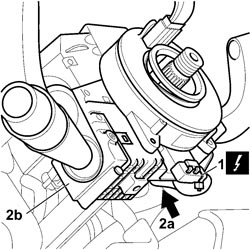
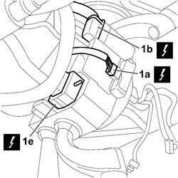
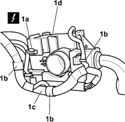

5550A13 <x>TORQUE UNIT ASSEMBLY - R&R FOR VERSIONS WITH ESP</x>
- Path
- Procedures > 55 ELECTRICAL EQUIPMENT > 5550 WARNING AND MANOEUVRING INDICATORS > 5550A STALK UNIT > 5550A13 <x>TORQUE UNIT ASSEMBLY - R&R FOR VERSIONS WITH ESP</x>
- Kind
- repair procedure (removal / refitting; the operation number is the code)
- Applies to
- all engines; all production periods
- Interactive page
- https://sloeber94.github.io/elrnDB-fCrm/en/#/194000763
Applies to: all engines; all production periods
Place the steering wheel in a central position with the wheels straight.
- Turn the ignition key to the OFF position and extract it.
- Disconnect the battery leads and insulate them.
- Wait for 10 minutes before continuing.
Description | Connector | |
|---|---|---|
BATTERY |
Applies to: all engines; all production periods
 Removing
Removing
 Refitting
RefittingOp. 5580C18 AIR BAG MODULE - R+R
Op. 7040A26 STEERING COLUMN TRIM - R+R
1. Disconnect the electrical connection for clock spring.
Description | Connector | |
|---|---|---|
1 | CLOCK SPRING COUPLING |
2. Working from below, loosen the bolt of anchorage collar (2a) and withdraw stalk unit (2b) with the closk spring and angular sensor from the steering column.

Applies to: all engines; all production periods
1. Disconnect connection (1a) from the steering angle sensor, release the anchorages and disconnet connections (1b) and (1c).
Description | Connector | |
|---|---|---|
1a | STEERING ANGLE CONTROL UNIT (NAS) |
Description | Connector | |
|---|---|---|
1b | ABS COUPLING | See D005 ABS COUPLING |
Description | Connector | |
|---|---|---|
1c | ABS COUPLING | See D005 ABS COUPLING |
Description | Connector | |
|---|---|---|
1c | ABS COUPLING | See D005 ABS COUPLING |

Applies to: all engines; all production periods
- Turn the stalk unit through 180°.
1. Disconnect the electrical connection (1a) of the Cruise Control device on the rear of the stalk unit, release wiring harness (1c) from anchorages (1b) and remove the stalk unit (1d) complete with clock spring and angular sensor.
Description | Connector | |
|---|---|---|
1a | STEERING COLUMN SWITCH UNIT |

Applies to: all engines; all production periods
Refitting
Removing- Connect the electrical connections of the stalk unit complete with clock spring and angular sensor.
Description | Connector | |
|---|---|---|
CLOCK SPRING COUPLING |
Description | Connector | |
|---|---|---|
STEERING ANGLE CONTROL UNIT (NAS) |
Description | Connector | |
|---|---|---|
1a | STEERING COLUMN SWITCH UNIT |
- Engage the wiring harness in the anchorages
- Position the stalk unit complete with clock spring and angular sensor on the steering column.
Op. 7040A26 STEERING COLUMN TRIM - R+R
Op. 5580C18 AIR BAG MODULE - R+R
- Connect the battery terminals.
Description | Connector | |
|---|---|---|
BATTERY |
- Check the operation of the electrical appliances controlled by the stalk unit.
- Calibrate the steering angle sensor incorporated in the stalk unit following the procedure indicated by the Examiner diagnostic equipment.
Topics linked from this page (7)
- 5580C AIR BAG SYSTEM
- 5580C18 AIR BAG MODULE - R+R
- 7040A26 STEERING COLUMN TRIM - R+R
- A001 BATTERY
- D047 CLOCK SPRING COUPLING
- H005 STEERING COLUMN SWITCH UNIT
- M092 STEERING ANGLE CONTROL UNIT (NAS)
Topics that link to this page (12)
- 3350E20 STEERING ANGLE SENSOR - R.R.
- 5040C10 AIR CONDITIONING CASING - R.R
- 5040C50 AIR CONDITIONING HEATER RADIATOR - R.R.
- 5040C64 A/C EVAPORATOR - R+R
- 5040D80 AIR CONDITIONER SYSTEM WIRING BUNDLE - R R OR REPLACE
- 5040D94 AIR CONDITIONING LEFT UPPER AIR DISTRIBUTION FLAP MOTOR (DEFROST) - R.R
- 5505C10 FRONT CROSSMEMBER WIRING - R.R
- 5505C31 BUILT-IN WIRING UNDER DASHBOARD - R.R.
- 5580C13 CLOCK SPRING FOR AIR BAG MODULE ON STEERING WHEEL - R&R FOR VERSIONS WITH ESP
- 7040A10 DASHBOARD TRIM - R+R
- 7040A97 INSTRUMENT PANEL TRIM SUPPORTING CROSSMEMBER - R.R
- 7095E22 SOUND-PROOF PANEL UNDER DASHBOARD SUPPORTING CROSSMEMBER - R.R.